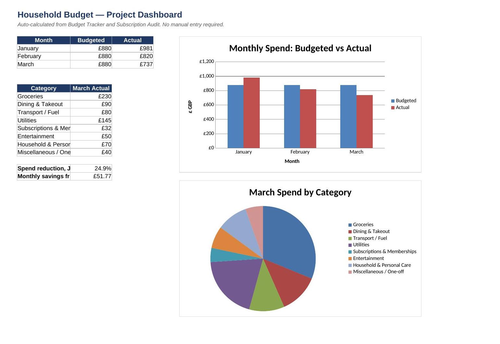
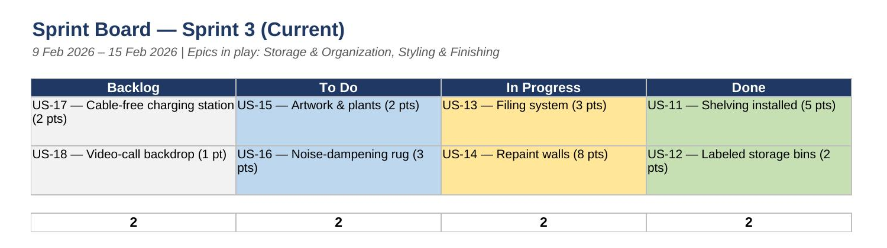
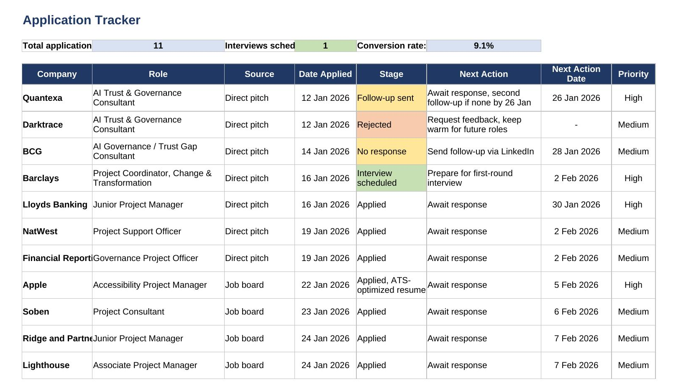

Two years of coordination-heavy work across schools, a cybersecurity internship and a data analytics internship, plus three self-run projects built to prove I can carry a project end to end. Now looking for my first role with "Project" in the title.
None of my paid roles have had "Project Manager" in the title yet. What they've had, every time, is the same underlying work: tracking multiple things at once, keeping the right people updated, and making sure nothing slips through. As a Cover Supervisor I'm the first point of contact across 5+ schools every shift. During a cybersecurity internship I coordinated remote teams and documentation across time zones. During a data analytics internship at Capgemini I tracked 8 Agile sprints without missing a deadline.
To close the gap between that experience and an actual PM title, I built three of my own projects, a household budget run like a 12-week programme, a home workspace redesign delivered through Agile sprints, and this job search itself, structured with a charter, a tracker, and a risk log. Real deliverables, run with real project discipline.
I'm currently working through my PRINCE2 Foundation certification and looking for a Project Coordinator or Associate Project Manager role where I can put the title to the work I'm already doing.
Hover a card for the proof behind it.
Coordination-heavy roles, none titled "Project Manager" yet, all built on the same core work.
Three real projects, each with a charter, tracked execution, and a closeout, applied to everyday problems instead of a simulated case study.



Everything on this page in one page, PRINCE2 progress, the three internships and roles, and the three self-directed projects above.
Download PDF